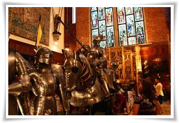
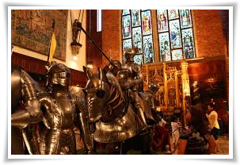

Breathtaking Places around Recife!
1. Ricardo Brennand Institute
 

The Institute is a must-see museum in Recife, which houses a beautiful art gallery and one of the largest collections of medieval cold weapons in the world. More than 3,000 items are scattered throughout the structure, which was built along the lines of a medieval castle.
2. Jaqueira Park


Jaqueira Park boasts a large green area and several hiking, biking, BMX and skating trails.
Besides its beauty, which is due to various fruit and ornamental trees and several gardens designed by the landscaper Carlos Belani, many events are held in the park, which also houses the Baroque-style Chapel of Our Lady of Conception.